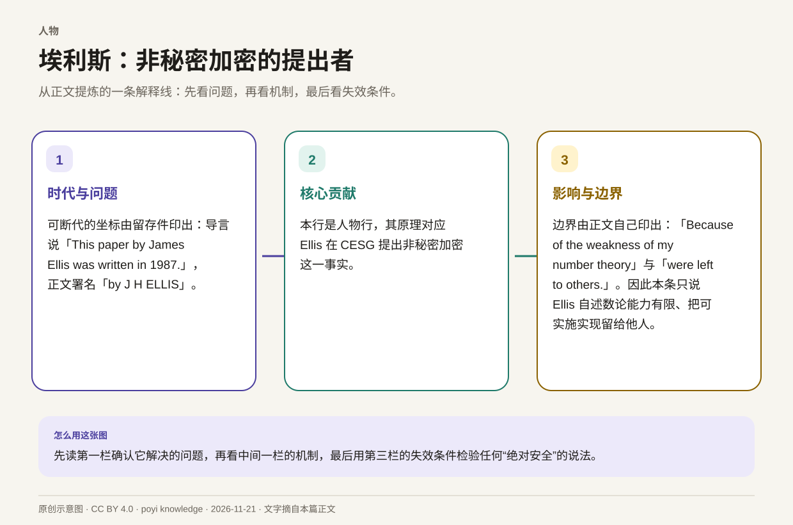

原理与机制
人物：詹姆斯·埃利斯（James Ellis）。本行是人物行，其原理对应 Ellis 在 CESG 提出非秘密加密这一事实。留存追述的导言印出「work by James and others in CESG」与「of the invention and development within CESG of non-secret encryption (NSE)」，正文又印出「NSE was my idea」。因此该条目把 Ellis 定位为非秘密加密（NSE）这一想法的提出者，不把后来公开的 RSA 或 Diffie-Hellman 方案归到他名下。

为什么重要
理论贡献由正文印出：他先写「We had an existence theorem.」，再写「I published the existence theorem in 1970」。因此该条目只说 Ellis 在 1970 年发表存在性定理，证明无需预先交换密钥的保密通信在理论上可行，不把该定理当成可实施的 RSA 方案。
应用与实例
人物与机构的关系由导言与正文印出：这份追述写的是「work by James and others in CESG」，正文说明其主题是「of the invention and development within CESG of non-secret encryption (NSE)」。因此该条目只把 Ellis 的用途落在 CESG 内部的理论论证与历史记录上，不称他参与公开标准制定。
边界与攻击面
边界由正文自己印出：「Because of the weakness of my number theory」与「were left to others.」。因此该条目只说 Ellis 自述数论能力有限、把可实施实现留给他人，不把这句话读成他对 RSA 实现的直接贡献。
历史与背景
可断代的坐标由留存件印出：导言说「This paper by James Ellis was written in 1987.」，正文署名「by J H ELLIS」，Cryptome 说明「Posted 16th December 1997.」。因此该条目把这份追述断到 1987 年写作、1997 年 12 月 16 日公开贴出，不写他生卒年等未印出信息。
可核角色与证据链
詹姆斯·埃利斯归入非对称公钥，登记时代为公钥革命。该条目只登记有来源支持的教育/任职机构、公开文本或专利、参与的标准/机器/事件与可核同行评价。来源账本包括：Wikipedia search entry for 詹姆斯·埃利斯；MacTutor History of Mathematics Archive, University of St Andrews。
没有来源支持的出生、死亡、家庭、师承、奖项、论文数量和任职日期不补写；同名人物不合并；后人归功与本人文本分开。
同名概念的分界
詹姆斯·埃利斯只对自身登记对象负责。与相邻条目的名称可能重叠，该条目不把别条的事实并入，也不用一个版本来覆盖另一个版本。
遇到同名对象时先查三项：类型（人物/事件/器物/术语）、时间、来源机构；三项不能同时对上，就当作不同条目处理。
来源等级与未核项
该条目来源账本包括：Wikipedia search entry for 詹姆斯·埃利斯（Tier 3）；MacTutor History of Mathematics Archive, University of St Andrews（Tier 2）。
Tier 1/2 只说明来源类型，不等于每条断言都逐页核过；正文中没有来源支持的日期、数量、角色和参数保持空白。二手概述与一手材料冲突时，以一手材料为准；争议不静默覆盖，保留在边界节。
逐步示例与核验
角色关系模型
只登记四类关系：教育/任职机构、公开文本或专利、参与的标准/机器/事件、可核同行评价。每条关系都要有来源；没有来源的师承、奖项和私生活不进入模型。
参考出处
- Wikipedia search entry for 詹姆斯·埃利斯. https://zh.wikipedia.org/w/index.php?search=%E8%A9%B9%E5%A7%86%E6%96%AF%C2%B7%E5%9F%83%E5%88%A9%E6%96%AF
- MacTutor History of Mathematics Archive, University of St Andrews. https://mathshistory.st-andrews.ac.uk/